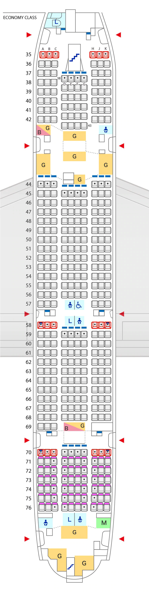
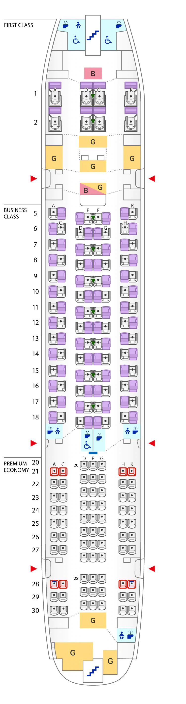

- 
- 
Airbus A380-800
目前在列：20
参数
| 机材信息 | 详情 |
| 座位数 | 520 |
| 总长 | 72.7m |
| 总宽 | 79.8m |
| 总高 | 24.1m |
| 巡航速度 | 910km/h |
| 续航里程 | 13,330km |
| 最大飞行高度 | 13,100m |
| 最大起飞重量 | 560.0ton |
| 发动机型号名称 | Trent 970 |
| 发动机推力 | 34,088kg x 4台 |
| 载油量 | 320kl |
机型介绍
此为空客380-800的520个座位的座位图。
共有2层，2层为头等舱、公务舱、豪华经济舱座位。
1层为经济舱座位。
2层座位数为头等舱座位8个、公务舱座位56个、豪华经济舱座位73个。
座位排数为第1排至第30排。
紧急出口在第5排的前方左右各设有1处，在第20排的前方左右各设有1处，在第28排的前方左右各设有1处。
楼梯在机体前方和后方各设有1个。
此为2层客舱座位的说明。
头等舱为第1排和第2排。
座位排列从左至右依次为A、通道、D、G、通道、K。
所有座位均设有桌板。
移动式隔板位于第1排、第2排的D与G之间。所有座位的扶手均不可抬升。
公务舱为第5排至第18排。
第5排、第7排、第9排、第11排、第13排、第15排、第17排的座位排列从左至右依次为A、通道、E、F、通道、K。
第6排、第8排、第10排、第12排、第14排、第16排、第18排的座位排列从左至右依次为C、通道、D、G、通道、H。
所有座位均设有桌板。
移动式隔板位于第5排、第7排、第9排、第11排、第13排、第15排、第17排的E与F之间。
所有座位的扶手均不可抬升。
豪华经济舱为第20排至第30排。
第20排座位的排列方式是从左到右依次为通道、D、F、G、通道。
第21排到第30排的座位排列从左至右依次为A、C、通道、D、F、G、通道、H、K。紧急出口座位为第21排和第28排的A、C、H、K。
所有座位的扶手均不可抬升。
无窗座位为第28排的A、K。
显示器设置在第20排的前方。
可使用轮椅、带尿布更换台的温水清洗功能的卫生间在第1排的A、D前方设有1处。
可使用轮椅的温水清洗功能的卫生间在第1排的G、K前方，第18排的D后方各设有1处。
带尿布更换台的温水清洗功能的卫生间在第18排的C与H的后方各设有1处，在第30排的H、K的后方各设有1处。
带温水清洗功能的卫生间在第18排的G的后方设有1处。
厨房位于第2排后方和机体后方。
酒吧在第1排和第5排的前方各设有1处。